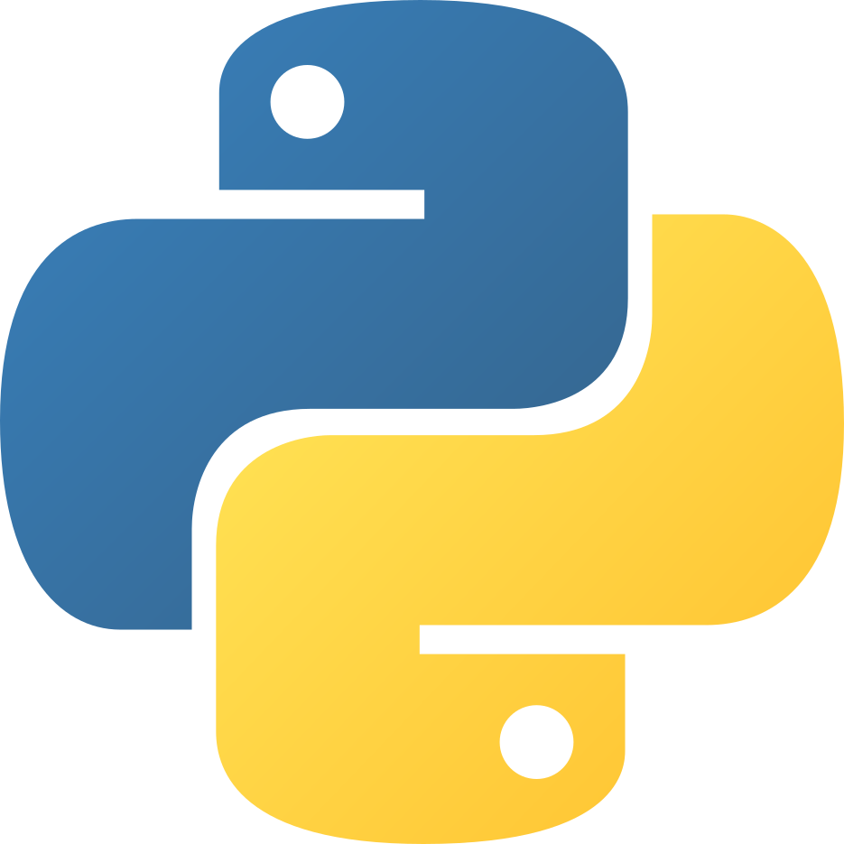

Software 3rd Party Learning Resources
Introduction
Below is a list of useful learning materials for common programming languages (as well as any other sources found along the way). The materials are grouped by topic starting with general sources - places that cover everything in a reasonably clear and explanatory way. Please refer to these materials if you cannot find anything in our documentation or want to start on your learning journey in your own time. Do remember that while we endeavour to make sure that our own guides are comprehensive and clear it can always help to give a further understanding of topic when reviewing it from multiple angles. In addition, programming is a solution to a puzzle and the puzzles always have multiple solutions. So, while our solution (methods) might not suit your style, perhaps someone else’s does.
If you come across any sources not in this list that you think could be useful, please reach out and contact the team via the contribution portal and we will review it for adding to the list.
Live code-along sessions
If you are looking for additional sessions to Bytes & Bites you can perhaps find support in the codebar sessions though do note that as a student “workshops and events are exclusively for women, non-binary, LGBTQ+ members (mirrored also in the rainborR buddy programme), and people from underrepresented minority groups”. They do however upload their talks to their youtube channel, much like PyData (talks mostly on data analysis in various languages).
Coding courses
There are many places peddling their coding courses these days, however there are still plenty of good quality free courses. In general you can find everything you need to learn for free in one way or another, including interactive courses.
Honourable mentions
Swirl – R – An R package that teaches you to code in line. Install the package, call upon it and follow the instructions. There are also websites to help with solutions when you are stuck. MIT OpenCourseWare – All – MIT has a series of free courses from introductory to intermediate. You can pay if you want your work marked and to get a certificate, otherwise it is not needed. W3Schools – All – A site with free courses for all sorts of programming languages that also has embedded coding playgrounds, tests, questions, and cheatsheets. OSSU Compsci course - Mixed - A (mostly) free comprehensive computer science course from mixed resources with a community for discussion, questions, and trouble shooting. RSQKit – Overview – Provides an overview of best coding practices in science including (but not limited to) management, citation, sharing code, and pipelines.
Paid coding course sites
There are many places to find coding courses, here are a few popular ones:
Codecademy: A site that has both paid course and free articles/guides. Ignore the courses you can find some good information in their articles, though perhaps not the best place to get it. Datacamp: The Etos to the Kruidvat that is Codecademy. Stick to the articles and look elsewhere for courses or topics if you don’t want to pay. Coursera: Essentially a course marketplace, be sure to read the reviews and check that the topics are relevant. There are free courses or some that provide a free option of their course that is a limited version of the paid one. edX: A more refined course marketplace intially started by a US university collective. The courses vary greatly in length (days to years) and cost (free to 10s of thousands of euros), again it is worth checking the reviews before signing up to one.
Programming forums
There are a lot of places to discuss programming and majority of mixed forums (or social media) will have sections to discuss programming these days. In fact many frameworks, libraries, packages, and services that are large enough will have their own forum for troubleshooting and to discuss use cases.
Undoubtably the largest and most extensive programming forum collection is StackOverflow. StackOverflow is forum for discussing and asking all sorts of programming questions and as a result you can find an answer for almost any sort of problem. Be aware when posting that the users are very strict on the posting rules and can come across as unfriendly. To avoid bots and spamming you have to get enough points (via contribution) in order to comment, vote, etc. In the long run this helps to avoid manipulation and spreading of bad practice, but does not make a beginner friendly community.
Articles & Guides
Delftstack: This is a site full of tutorials in several languages, it is a passion project, so not every topic is covered. As you might have guessed the name is inspired by the city, but it not explicitly related to the university or city.
Medium/TowardsDataScience: A platform where users are paid to write articles about various topics, not everything is always fully explained or understood by the writers, but you can find some niche topics of relatively clear intros to topics there. Be aware that it might not promote the best coding practices and that is not usually the aim.
GeeksForGeeks: A more to the point version of Medium/TowardsDataScience with slightly less reputable articles and more frequently outdate code. It can be useful, but take the code as a guide to get the basics working and restructure the code to fit good coding practices.
Python

General
Articles & Guides
Mouse vs Python is an extensive python themed blog by Mike Driscoll writing small guides on the solution he found for a problem he faced in his work. There are a lot of more niche topics covered here.
Real Python is a large blog with multiple contributors and has indepth posts and guides on topics ranging from beginner topics to more complex fundamentals.
Al Sweigart, an Python powerhouse, has many books covering different topics, and has several of them freely available to read online. The topics of the books range from automation to game development to recursion to automation to game development to recursion to automation to game development to recursion to break…
Videos
Arjan codes is a channel that covers all sorts of programming conventions and tips to keep clean and sustainably scalable code.
Web tools and Dashboards
Video
Andriana Fanilo is a Streamlit expert and developer who regularly produces short videos on how to develop webapplets (in Python) using Streamlit as well as developing new features himself.
R

General
Articles & Guides
R for Data Science is the website for the first edition of “R for Data Science”, published January 2017 by Hadley Wickham and Garrett Grolemund. The book covers all the basics needed for coding R projects in a scientific way.
R Studio Education, a collection of educational resources for R split into skill levels.
Hands-on Programming with R is another website edition of a book, and a great starting point for those wanting to learn how to code. It is also written by Garrett Grolemund.
Inline or Interactive
Swirl is an R package that teaches you to code in line. Install the package, call upon it and follow the instructions. There are also websites to help with solutions when you are stuck.
TidyTuesday is a weekly event where a dataset is released and programmers are let loose upon it. The idea is to create the an attractive and or informative collection of graphics that give some insight from the dataset. An article is written about it and the code used to produce the analysis and graphics is provided at the end of it. It’s a great way to learn some more interesting and real life programming and design skills.
Javascript

General
Video
Hyperplexed a youtube channel that has videos on various tips and tricks to make attractive web pages.